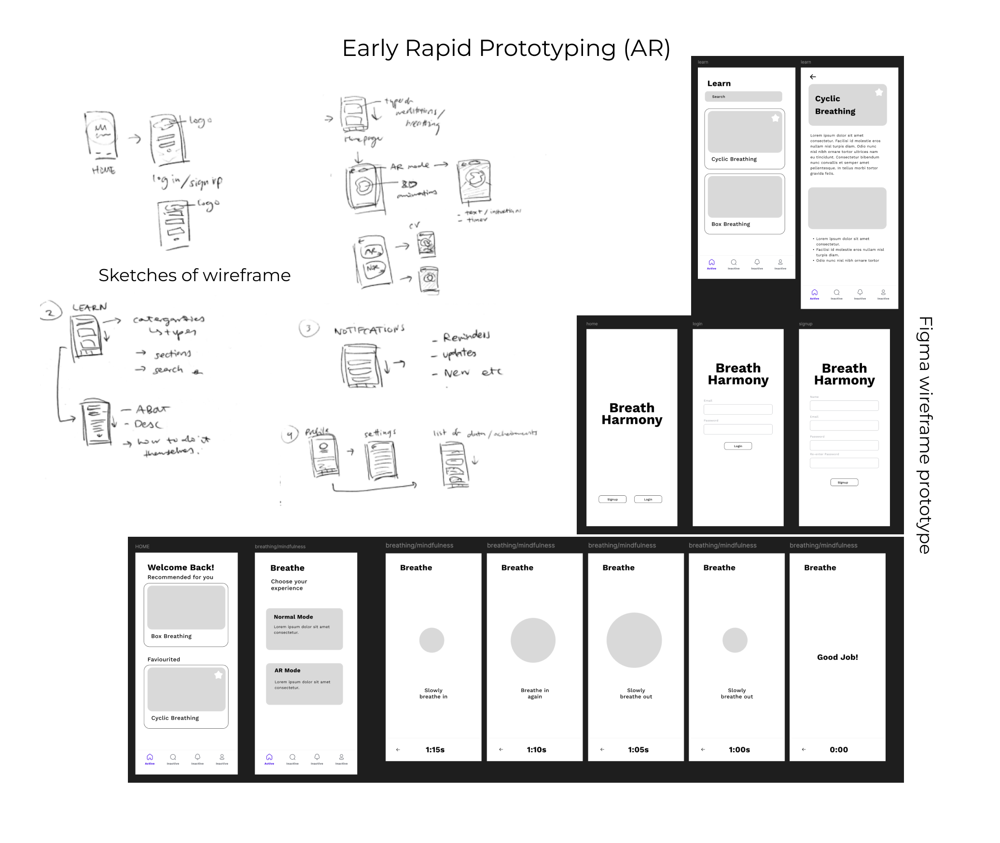

Blog 9 | Figma prototyping
Design 302 | Date: 24/09/24 (Tuesday)
Here, I will reflect on the start of my UI/UX side of prototyping, looking into the wireframe making and integration of my final output.
What?
I created a quick wireframe of my application via sketches on paper and pen first before then implementing the same sketches into Figma to prototype the wireframe quickly. I did the first draft within Figma with basic text boxes and shapes. I then connected these to become a functional “paper” prototype.
Around this time, I also figured out what my plan was for my final outcome and what my potential future steps were: to create a Figma prototype that externally links to a webAR for the AR aspect.
This was readily doable, as I was able to quickly sketch out many ideas. To then be placed within Figma, which I didn't have a significant learning curve at this point due to the fact that I had used this program before.
Figure 1.
Miro's progress in wireframing the application.

Note. A graphic of the author’s work on wireframing the application made up of screenshots of the author's Figma.
So what?
My main struggles would've been due to fully scoping out the other aspects of the application. I had a clear vision of what the homepage and mindfulness aspects were to be; however, I didn't know how to fully implement some other aspects. I had a list of functions within the application but wasn't fully sure how to combine them. This progress in wireframing helped immensely in letting me mix and try out different layouts for my application.
I think during this phase, I did have some concerns and fears about future work, such as the aesthetics and branding of the application rather than its functionality and usability. This created unnecessary stress for me during this phase, as I was focusing on the wrong aspects.
From this, we can learn to focus on what I am doing at the moment. Planning ahead is good; however, stressing about future work and what needs to be done later without having been at that phase just adds more unnecessary stress.
Now what?
I think that within this point of the project, in the ideation phase, I had been going back and forth between doing many different things, as I had two main aspects of my project that integrated into one. However, each of these aspects is split up into many other smaller tasks. Focusing on each step one at a time in the future would be helpful, ensuring that I stay focused but also that I can worry about future aspects of the project when it comes, as that is a future problem.
References
J, D. (1994). Reflective practice for practise. PubMed, 14(1), 47–50.
https://pubmed.ncbi.nlm.nih.gov/8303152
Rolfe, G., Freshwater, D., & Jasper, M. (2001). Critical Reflection for Nursing and the Helping Professions: A User’s Guide. Palgrave MacMillan.
What? So what? Now what? (2020, January 30). The University of Edinburgh.
https://www.ed.ac.uk/reflection/reflectors-toolkit/reflecting-on-experience/what-so-what-now-what